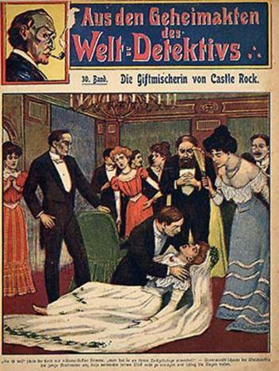
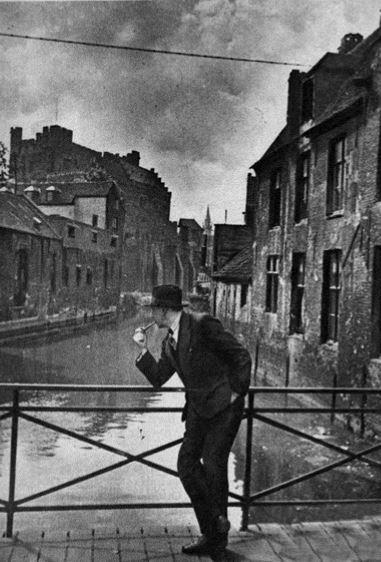
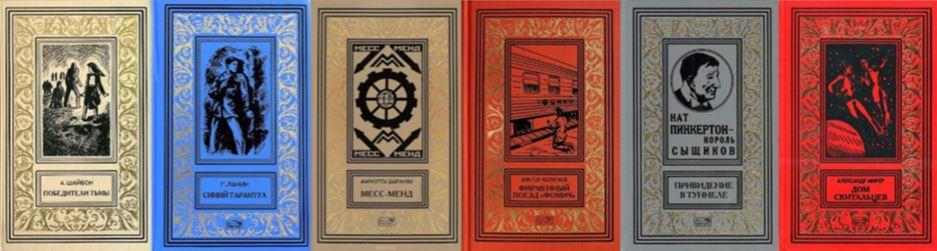
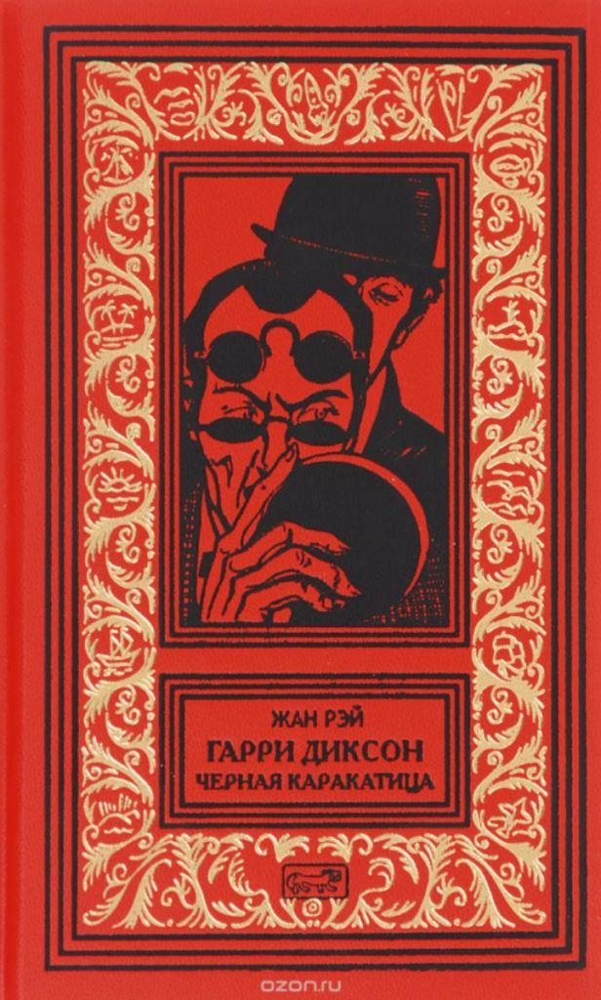
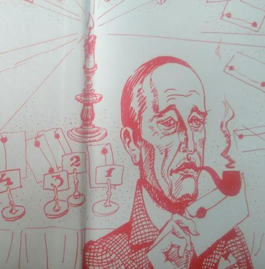
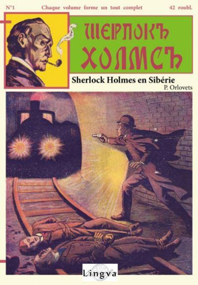
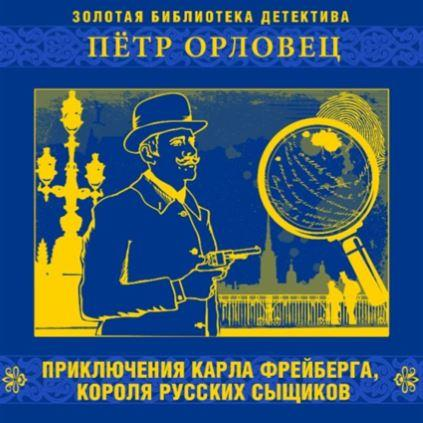

Apparus en Allemagne à la fin du XIXe siècle, les romans populaires en fascicules connurent un succès retentissant jusqu’à la fin des années 30. Reconnaissables à leur titre en bandeau surmontant une « couverture tragique » sensée attirer le chaland, chaque collection avait son héros récurrent : policier, détective ou même cambrioleur.
De nombreux fascicules proposaient des aventures apocryphes et anonymes de Sherlock Holmes, au grand dam de Conan Doyle. Sous la pression, les éditeurs ont supprimé le nom du héros de la couverture. Ainsi, une série allemande intitulée « Aus der Geheimakten der Weltdetektiv » (Berlin, Verlaghaus für Volksliteratur und Kunst) a fait disparaître le nom de Holmes ce qui donne dans la version française : « Les Dossiers secrets du roi des détectives ». Les droits sont également achetés par l’éditeur hollandais Henri Nelissen (Amsterdam, Roman- Boek en Kunsthandel), qui s’associe au Gantois Hip Janssens pour conquérir le marché belge. Le fascicule original, « Am den Pforde des Totes » (1907) devient « Aan een vrezelijke dood ontsnapt » (1927) et « Échappé à une mort terrible » (1929). Il inaugure une nouvelle collection : Harry Dickson, le Sherlock Holmes américain. Le nom accrocheur du détective est conservé sans risque d’ennuis avec les ayant-droits.
Un illustrateur mythique
Les couvertures sont l’œuvre du peintre allemand Alfred Roloff (1879-1955). Il étudie à Hambourg et Berlin et débute en tant que dessinateur pour la série « Detektiv Sherlock Holmes und sein weltberühmte Abendteuer » (« Les Dossiers secrets de Sherlock Holmes », 230 illustrations entre 1907 et 1911). Vingt ans après, 176 d’entre elles sont utilisées pour les Harry Dickson en français.
Engagé pour traduire les romans du néerlandais en français, Jean Ray se serait plaint de la pauvreté des intrigues. Janssens lui aurait alors proposé de réécrire les histoires, en s’inspirant de l’illustration de couverture (et ce à partir du n°65, « On a volé un homme », en 1932). Il devait fournir un texte de 60 pages tous les 15 jours, ce qu’il faisait sur sa machine à écrire Underwood n°5, avec le soutien d’une « pipe chevelue de Navy Cut et un cruchon de schiedam de Hollande » (« Le Bien public », 12/02/1930).
Harry Dickson, détective du surnaturel
« Nous sommes ici dans le roman populaire, à rebondissements sensationnels dans la même veine que Fantômas. Le Sherlock Holmes américain est distingué, perspicace, maître de lui, sensible à l’occasion jusqu’à la faiblesse. Il a pour assistant – pour élève – le jeune Tom Wills, qui a beaucoup à apprendre encore, sauf le courage, qu’il possède au plus haut point. Les deux hommes mènent le bon combat pour la société, la vertu, le War Office et bien d’autres valeurs sûres. Ils réduisent à l’impuissance, après d’extraordinaires aventures, les plus redoutables coquins qu’a pu engendrer le cerveau d’un écrivain fantastique particulièrement doué » écrit Thomas Owen à ce sujet (1966).
Renaissance tardive
À une dizaine d’exceptions près, les fascicules du n°65 au n°178 sont de la main de Jean Ray. Il écrit également deux aventures en néerlandais dans la revue « Ons Land » (Notre Pays). Une d’entre elle se déroule à la prison de Gand où il a purgé une peine pour escroquerie et où… il pose pour une photo sur laquelle il endosse le rôle de son personnage. La série tombe ensuite dans l’oubli durant un quart de siècle, jusqu’à ce qu’Henri Vernes, l’auteur-vedette de Marabout (142 aventures de Bob Morane) propose de les rééditer. 16 volumes sont publiés entre 1966 et 1974. Après le rachat de Marabout par Hachette (1977), une dizaine d’autres éditeurs se lancent dans l’aventure.
L’édition de référence pour les Harry Dickson de la main de Jean Ray est incontestablement celle de l’Amicale Jean Ray / Vriendenkring Jean Ray (Kuurne, 2004-2014). L’ensemble des textes traduits, modifiés ou écrits par le Gantois (111 fascicules) y sont repris dans l’ordre chronologique de parution sous la forme de fac-simile. Le texte original, avec ses qualités et ses défauts (coquilles, belgicismes) est ainsi respecté. Cette impressionnante publication est enrichie d’un riche appareil critique ainsi que de la traduction des textes flamands.
Harry Dickson à Moscou
Les éditions moscovites Престиж Бук ont publié deux volumes dans la collection « Ретро библиотека приключений и научной фантастики » (Bibliothèque d'aventure et de science-fiction rétro).
Ils nous font découvrir seize aventures : quatre extraite du tome 1 de Marabout, quatre du tome 2, six du tome 3 et deux du tome 4. Nous ne pouvons que saluer cette initiative qui donne la possibilité aux lecteurs russes de découvrir l’œuvre de Jean Ray la plus populaire dans la sphère francophone. Les deux volumes se présentent sous la forme d’ouvrages cartonnés, reliés, dont la couverture s’inspire des plats historiés des Jules Verne de chez Hetzel. Ils sont abondamment illustrés par L.V. Kolozov, à qui on pourrait reprocher d’avoir représenté un Sherlock Holmes vieillissant plutôt que l’homme d’action qu’est Harry Dickson.
Bibliographie de Harry Dickson / Гарри Диксон
Жан Рэй Гарри Диксон. Дорога Богов – Jean Ray Harry Dickson. Le Chemin des dieux.
Traduction de А.М. Grigoriev. Moscou Престиж Бук, 2017. Couverture cartonnée (ill. intérieures de L.V. Kolozov) 13 × 20. 464 p. Édition originale de la traduction. Achevé d’imprimer en décembre 2016.
Contient : Анри Верн. Предисловие — préface de Henri Vernes ; Сладкоголосый вампир — Le Vampire qui chante ; Улица утерянной головы — La Rue de la tête perdue ; Воскрешение Горгоны — La Résurrection de la Gorgone ; Странный зелёный свет — L’Étrange Lueur verte ; Дорога Богов – Le Chemin des dieux ; Таинственные исследования доктора Друма – Les Mystérieuses Études du Dr Drum ; Крик-Крок смерть в рединготе - Cric-croc, le mort en habits ; Тайны Правилон-Хауза — Les Énigmes de la maison Rules.
Жан Рэй Гарри Диксон. Чёрная каракатица — La Pieuvre noire.
Traduction de А.М. Grigoriev. Moscou Престиж Бук , 2017. Couverture cartonnée (ill. intérieures de L.V. Kolozov) 13 × 20, 432 p. Édition originale de la traduction. Achevé d’imprimer en juillet 2017.
Contient : Чёрная каракатица — La Pieuvre noire ; Семь низеньких креслиц — Les Sept Petites Chaises ; Мысли господина Триггса — Les Idées de M. Triggs ; Дом галлюцинаций — La Maison des hallucinations ; Убили мистера Паркинсона — On a tué M. Parkinson ; Тайна семи безумцев — Le Mystère des sept fous ; Ложе дьявола — Le Lit du diable ; Призрак Вечного Жида — Le fantôme du Juif errant.
Sherlock Holmes en Russie
Le succès des fascicules populaires n’épargne pas la Russie : la première traduction de Conan Doyle, « Les Mémoires de Sherlock Holmes », est parue sous le titre Записки знаменитого сыщика (1898). Une fois le canon holmsien traduit, les éditeurs de Saint-Pétersbourg publient des traductions de récits apocryphes allemands. Les histoires sont également réécrites afin de situer l’action en Russie. Ferdinand Bon écrit deux pièces de théâtre : « Sherlock Holmes » (« Шерлок Холмс ») en 1906 et « Le Chien des Baskerville » (« Абский Пес ») en 1907), mais il en existe des dizaines d’autres, et même un opéra. Arkadi Avertchenko (1881-1925) publie un roman parodique : « La Galoche perdue de Dobbles » (« Пропавшая калоша Доббльса »). En 1908, un auteur anonyme publie trois aventures de Sherlock Holmes dans la revue Ogonëk : « Sherlock Holmes à Pétersbourg », « Sherlock Holmes à Moscou » et « Sherlock Holmes à Bakou ». Chacune de ces nouvelles était illustrée d’un télégramme de Sherlock Holmes (en russe !) se plaignant du plagiat.
Mais le plus connu des auteurs holmsiens russes est sans conteste P. Orlovets, qui, – tout comme son héros – est un mystérieux personnage. Pseudonyme de Petr Doudorov, né en 1872, probablement décédé après 1929, Infatigable polygraphe, on lui doit des contes historiques et d’aventures, des récits de voyages, des reportages ainsi que des contes pour enfants et un recueil de poésies. Correspondant de guerre durant le conflit russo-japonais, il est gravement blessé à la tête.
Son expérience lui inspire un roman de science-fiction : « Le Grand trésor de la Sibérie »(1909), dans lequel un engin volant est capable de raser une ville japonaise.
On lui doit trois aventures de Sherlock Holmes : « Sherlock Holmes en Russie », « Sherlock Holmes en Sibérie », « Sherlock Holmes contre Nat Pinkerton ». Une quatrième aventure, « Sherlock Holmes contre Sonka à la Main d’Or » a été censurée. L’auteur crée également son propre enquêteur, Karl Freiberg, nouvelles écrites à quatre mains avec P. Nikitine (sans doute un pseudonyme de l’auteur). Dans cette série, Pilyaev endosse le rôle de faire-valoir qui était attribué au Dr Watson.
Karl Freiberg, père de Harry Dickson ?
« Les aventures de Karl Freiberg, roi des détectives russes » (« Приключения Карла Фрейберга, короля русских сыщиков ») a été publié pour la première fois chez A. P. Poplavsky (Moscou) en 1908. Les aventures de Freiberg se résument aux cinq histoires reprises dans le livre paru en 1908. Il est donc difficile de savoir si le détective, dont le physique rappelle celui de Harry Dickson, a l’étoffe d’un héros classique de la littérature policière. L’auteur semble hésiter entre le récit criminel, l’histoire d'aventures ou le roman à suspense, le récit de déduction y a rarement sa place : l’acte criminel force le détective à intervenir rapidement, sans la logique et la déduction d’un Sherlock Holmes.
Un signe distinctif de Freiberg est son amour des repas plantureux dans des restaurants huppés, ceux-ci, décrits par Orlovets sont bien connus des Pétersbourgeois. Freiberg ne cache pas son penchant pour la dîve bouteille : « Une bonne dose de champagne agit souvent fort bien sur moi. Après avoir bu du vin, je deviens deux fois plus méfiant et remarque parfois quelques détails importants qui m’échappent quand je suis sobre. Certes, je ne peux pas travailler, mais mon esprit, précisément en raison de ma suspicion exacerbée, fonctionne merveilleusement, et dans de nombreux cas, j’ai résolu une enquête insoluble en compagnie d’une bonne bouteille de vin. De plus, le champagne fonctionne mieux. Cela excite vraiment le système nerveux ». Mais le roi des détectives russes ne néglige ni la vodka ni le cognac, en solitaire ou accompagné de son assistant et compagnon de beuverie Pilyaev. Anticonformiste, Freiberg s’apparente plus à Harry Dickson qu’à Holmes ou Lupin." Les thèmes abordés bousculent les lecteurs : cannibalisme, chantage sexuel, kidnapping, nobles oisifs et malhonnêtes, petites frappes des bas-fonds. En même temps, Freiberg est énergique, observateur, téméraire, ce qui le rend sympathique. Les aventures du héros, hélas, ont rapidement cessé d'inspirer l'auteur qui avait des soucis pécuniaires. Orlovets, et avec lui Freiberg, ont laissé passer une chance, saisie une vingtaine d’années plus tard par Jean Ray et Harry Dickson. Un point commun entre les deux écrivains : ils sont tous deux réédités chez Prestige Books.
J-L. E.
COLL. “SHERLOCK HOLMES EN SIBÉRIE”
Lisieux, Lingva, 2015. Choix, préface et traduction de Viktoriya et Patrice Lajoye. 20 × 13 br., couv. Ill. (A. Roloff), 192 p.
“Sherlock Holmes à Saint-Pétersbourg”
“Bandit des chemins de fer”
“Tueur de gens”
“Le Trésor de la taïga”
“Le Forçat de la taïga de Vargouzine”
Édition originale de la traduction. Achevé d’imprimer en juin 2015.
COLL. SHERLOCK HOLMES ET L’EMPIRE RUSSE
Lisieux, Lingva, 2018. Choix, préface et traduction de Viktoriya et Patrice Lajoye. 20 × 13 br., couv. Ill. (A. Roloff), 220 p.
“Sherlock Holmes à Saint-Pétersbourg”
P. Orlovets, “Un vol pendant l’office mortuaire de l’évêque”
P. Nikitine, “La Maison mystérieuse”
“Sherlock Holmes à Odessa”
“L’Affaire du journal Ogonëk et Sherlock Holmes”
K. V. N., “Sherlock Holmes en Russie »
Arkadi Avertchenko, “La Galoche perdue de Dobbles”
Arkadi Boukhov , “La Fin de Sherlock Holmes »
Sergueï Solomine, “La Fin de Sherlock Holmes”
Maurice Baring, “Sherlock Holmes en Russie”
Édition originale de la traduction. Achevé d’imprimer en décembre 2018.
SOURCES
- Site des éditions Lingva : http://www.lingva.fr/?page_id=13
* Sur Karl Freiberg : Александр Шерман, Упущенный шанс Карла Фрейберга https://www.rulit.me/books/priklyucheniya-karla-frejberga-korolya-russkih-syshchikov-read-239447-1.html
Sur Престиж Бук : https://www.labirint.ru/pubhouse/2771/
Sur Harry Dickson:, Johnny Beckaert, Jean-Louis Etienne et Michel Oleffe : “Jean Ray illustré – geillustreerd”, vol. 1 et 2. Kuurne, Amicale Jean Ray, 2019.
Partager cette page